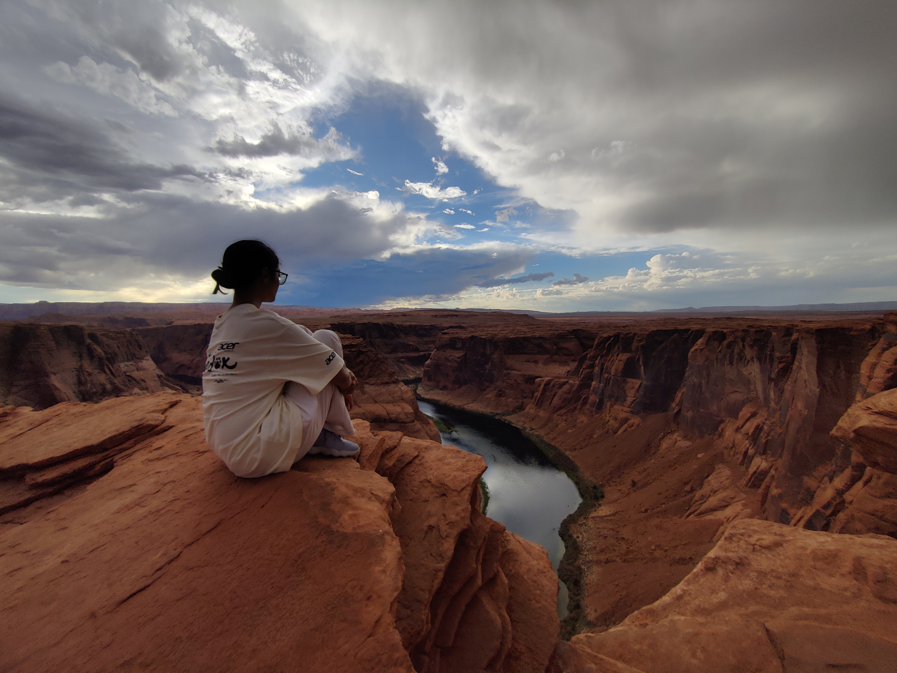
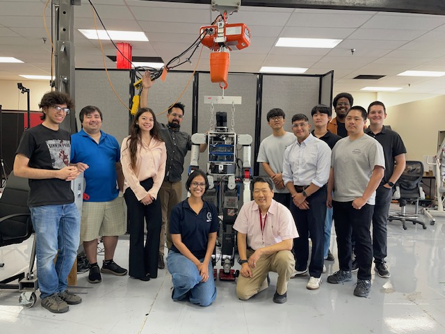
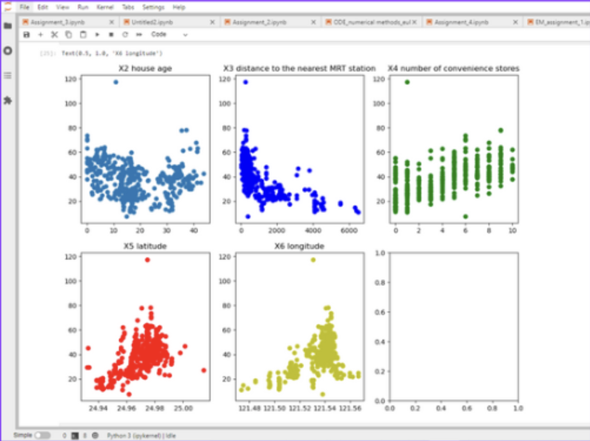
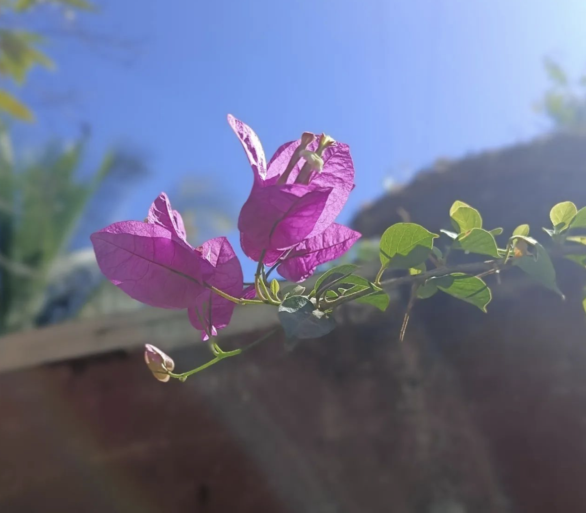
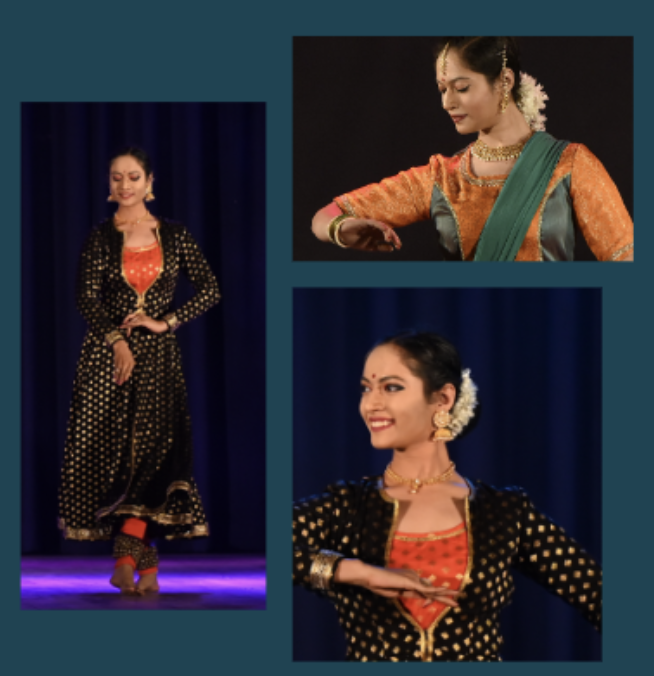
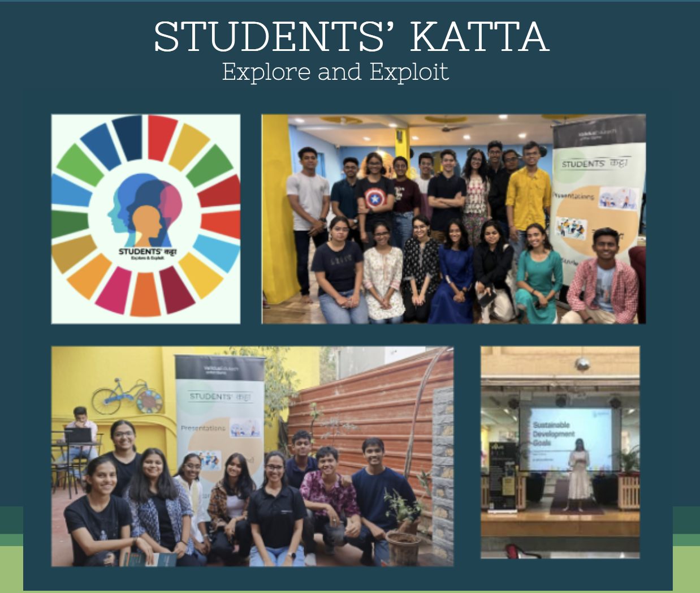
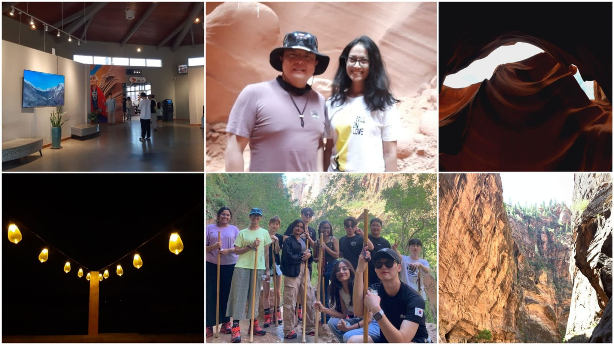
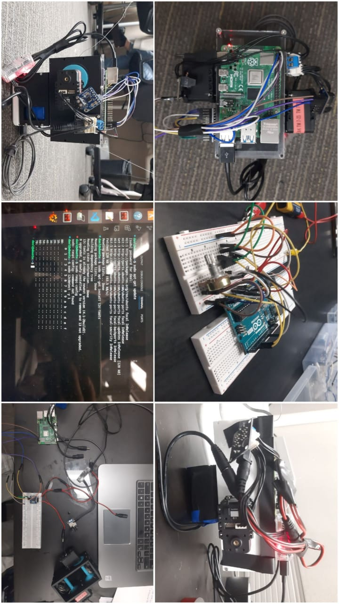

Mechanical engineering student passionate about robotics, data science, and community building.

Hi, I am someone who loves to explore and grow in different areas of life.
As a mechanical engineering student with an interest in data science, I enjoy learning and working on technical projects. At the same time, I find joy in creative and calming pursuits like Kathak, where I’ve completed my Visharad, and gardening, which keeps me connected to nature. These passions reflect who I am—a mix of curiosity, creativity, and a love for learning new things.

As a second-year mechanical engineering student, I enjoy exploring the intersection of design, mechanics, and technology. Whether it’s delving into machine drawing or applying motor theory, I find joy in turning concepts into functional solutions. My hands-on projects, such as working with Cable-Driven Parallel Robots, have deepened my understanding of how mechanical systems integrate with electronics and software to create real-world innovations.

Data science fascinates me because of its ability to transform raw information into meaningful insights. Currently, I’m learning statistics, programming, and analytics to tackle real-world problems and make informed decisions. Combining my engineering mindset with data-driven approaches, I aim to bridge the gap between technology and impactful solutions, helping solve challenges in engineering and beyond.

Gardening is more than just a hobby for me—it’s a way to connect with nature and find peace in the midst of a busy schedule. I love nurturing plants, watching them grow, and creating green spaces that bring life and beauty to my surroundings. Whether it's experimenting with different plants or understanding their care, gardening allows me to balance my technical pursuits with creativity and mindfulness.

As a Kathak Visharad, dance has always been an integral part of my life. Kathak has taught me the art of storytelling through graceful movements and rhythm. It’s not just a passion but a discipline that has shaped my confidence, expression, and dedication. For me, Kathak is a beautiful balance of tradition, creativity, and self-discovery, offering an escape and a deeper connection to Indian culture.

I'm actively involved in building a supportive community for students. The goal is to create a space where students can connect, learn from each other, and grow together. Through organizing events, workshops, and mentorship, I help students develop both academically and personally. It's all about creating a space where everyone feels valued and supported in their journey. This experience has taught me the importance of collaboration and the impact of helping each other succeed.

Traveling is one of my biggest passions. It allows me to explore new cultures, meet interesting people, and gain fresh perspectives. Whether it's a short weekend getaway or a long trip, I love discovering new places and experiences. Traveling not only broadens my horizons but also helps me learn more about myself and the world around me. It’s a way for me to recharge, stay inspired, and appreciate the diversity of our world.

I'm passionate about bridging technical knowledge with real-world impact. My goal is to grow as an engineer and data scientist, using my skills to create innovative solutions while helping others along the way.